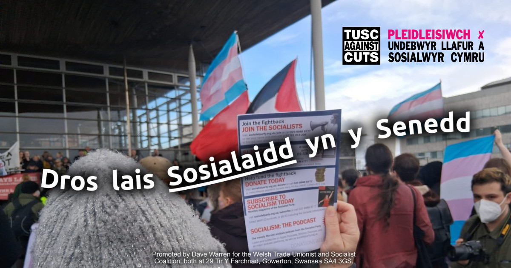
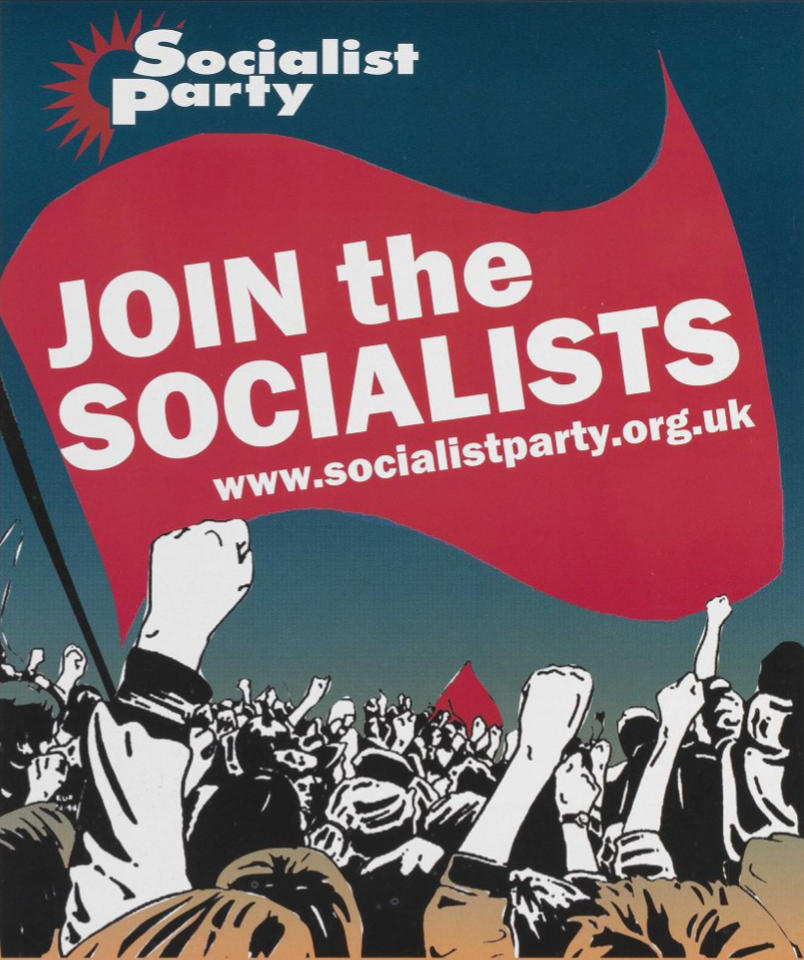

Mae’r Blaid Sosialaidd yn brwydro dros Sosialaeth – cymdeithas sy’n cael ei rhedeg gan bobl dosbarth gweithiol er lles pawb ac nid elw ychydig o bobl. Rydyn ni hefyd yn brwydro dros faterion o ddydd i ddydd megis cyflogau, budd-daliadau, hawliau a diwedd i orthrwm a rhyfel.
Rydyn ni’n sefyll yn yr etholiad hwn fel rhan o’r Glymblaid Undebwyr Llafur a Sosialwyr am ein bod ni eisiau gweld yr her sosialaidd ehangaf posib yn y blwch pleidleisio – fel cam tuag at lais gwleidyddol annibynnol i’r dosbarth gweithiol. Rydyn ni’n ymgyrchu dros blaid newydd y gweithwyr, yn seiliedig ar yr undebau llafur, sy’n denu gweithwyr, pobl ifanc, a chymunedau at ei gilydd i ddarparu dewis gwleidyddol arall i’r pleidiau busnes mawr sef Llafur, y Torïaid a Reform UK. Dewis sosialaidd ac ymladdgar.
Mae gan aelodau Plaid Sosialaidd Cymru record ardderchog o helpu arwain ymgyrchoedd llwyddiannus yn ein gweithleoedd, prifysgolion, colegau a chymunedau – fel undebwyr llafur, ymgyrchwyr dros hawliau anabledd ac LGBT+ ac fel ymgyrchwyr yn erbyn hiliaeth. Os ydych chi’n sosialydd, hon yw eich plaid. Ymunwch heddiw!
Promoted by / hyrwyddwyd gan Dave Warren for the / ar gyfer Welsh Trade Unionist and Socialist Coalition / Clymblaid Undebwyr Llafur a Sosialwyr Cymru, both at / y ddau yn: 29 Tir Y Farchnad, Gowerton / Tregŵyr, Swansea / Abertawe, SA4 3GS.
We respect your privacy. This site does not use any persistent cookies or tracking scripts. Our website hosting provider (Microsoft) collects standard network logs for security and load-balancing purposes.